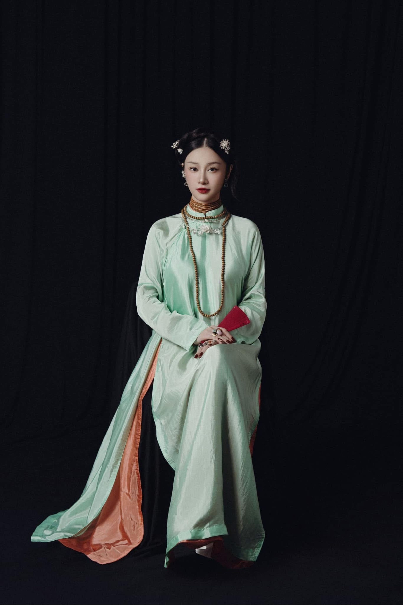
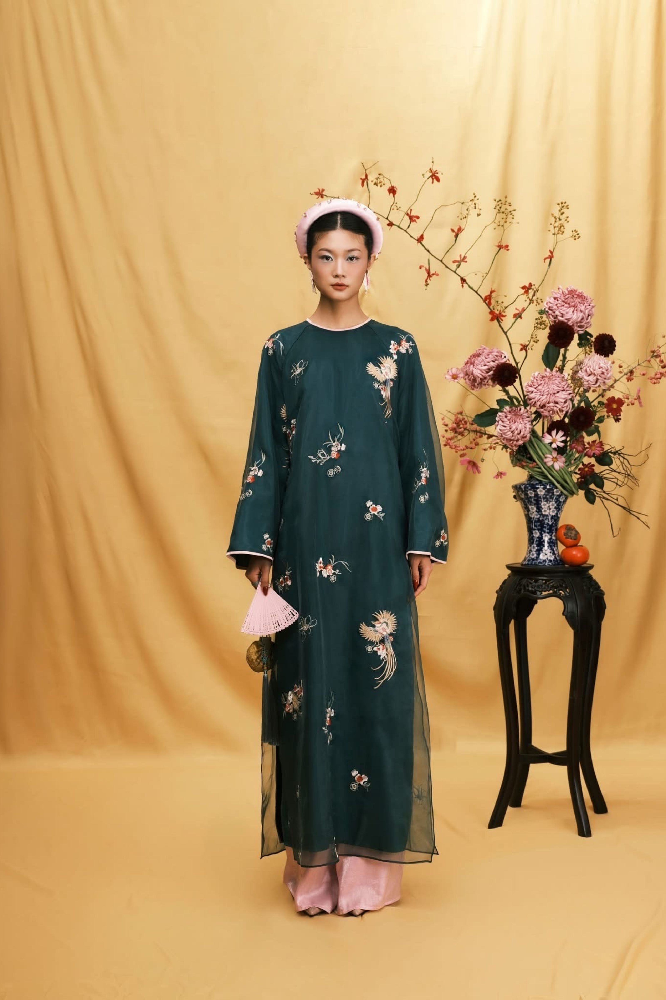

Modern elegance meets tradition in a pale Ao Dai styled with soft floral accents.With parasol in hand, the Ao Dai as a soft symbol of timeless femininity.

The yellow Ao Dai glows beneath a wooden pavilion, capturing elegance in motion.Rich jade tones and antique jewelry elevate this regal Ao Dai ensemble.The white Ao Dai captures simplicity and strength among blossoming branches.Two figures in soft silk evoke the poetic balance of tradition and femininity.

Dark green silk with floral embroidery makes this Ao Dai a bold fashion statement.A soft pink Ao Dai captures the tranquility of Vietnamese domestic style.